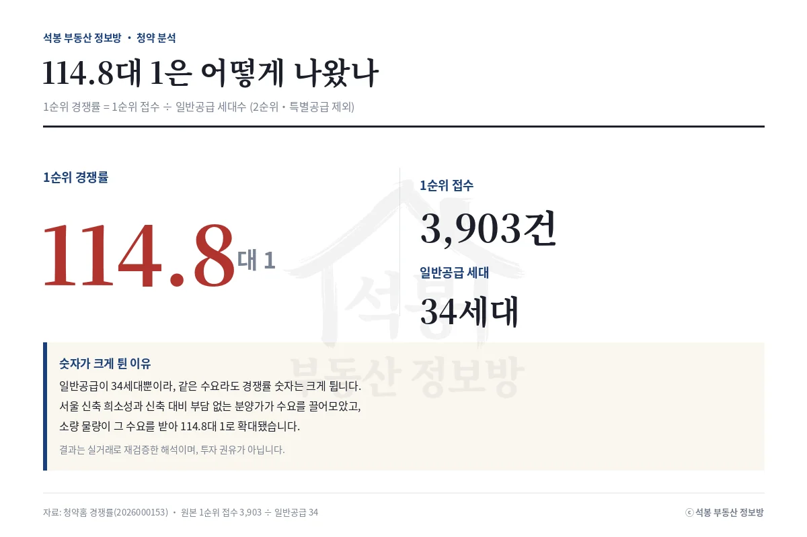
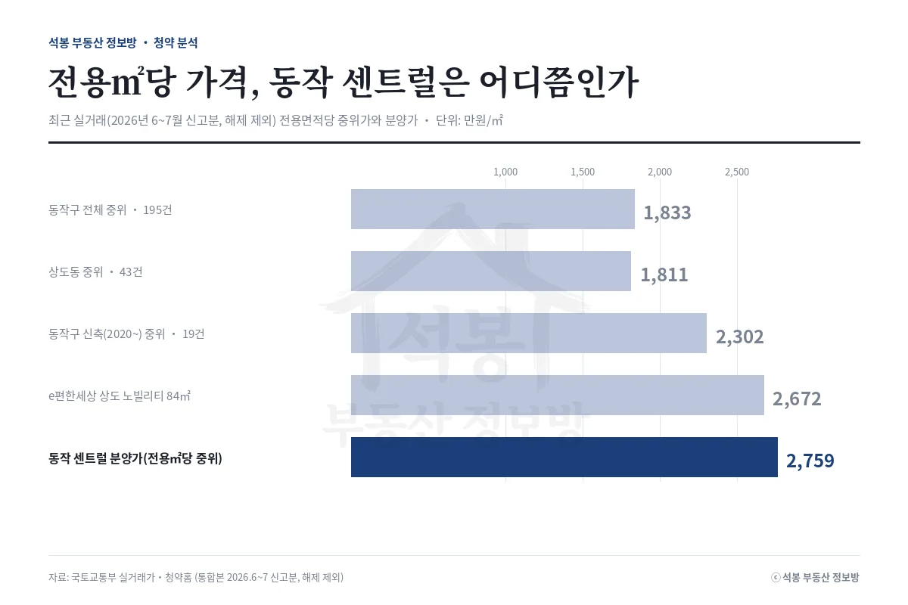
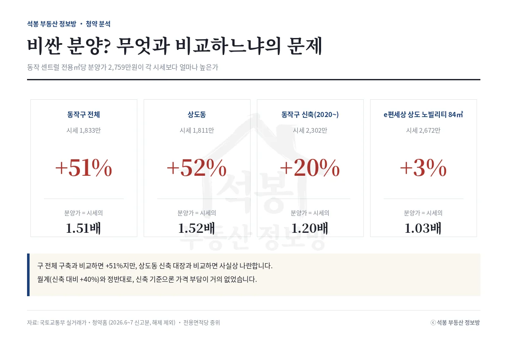
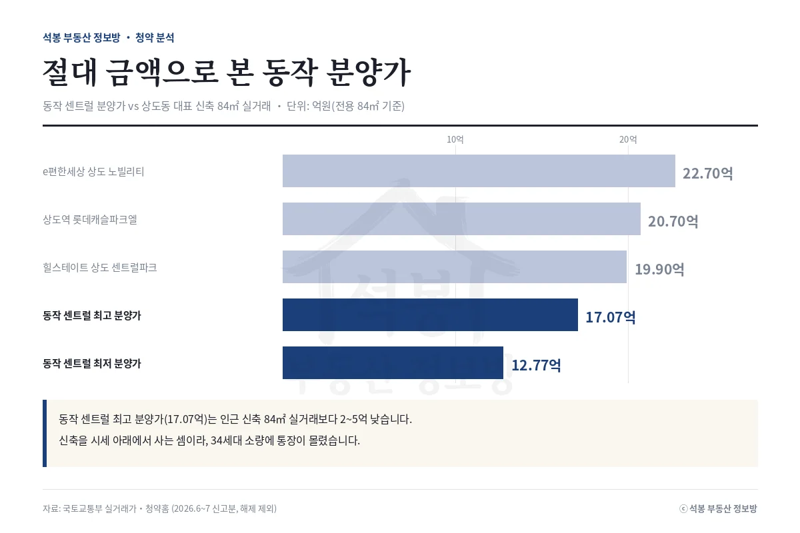

지난주 서울 동작구 상도동 동작 센트럴 동문 디 이스트가 1순위 114.8대 1로 마감했습니다. 일반공급 34세대에 1순위 통장 3,903개가 몰린 결과입니다. 흥미로운 건 분양가입니다. 전용면적당 분양가가 동작구 중위 실거래가보다 51%나 높았는데도 통장이 쏟아졌습니다. 통계상 '비싼 분양'이 왜 흥행했는지, 실거래 데이터로 뜯어봅니다.
결과부터: 34세대에 3,903명
먼저 기준을 밝혀두면, 여기서 말하는 경쟁률은 1순위 경쟁률(1순위 접수 건수를 일반공급 세대수로 나눈 값)입니다. 2순위나 특별공급은 넣지 않았습니다. 이 단지는 특별공급을 포함해 72세대 규모인데, 그중 1순위 일반공급이 34세대였고 여기에 3,903건이 접수돼 114.8대 1이 나왔습니다. 서울에서도 손에 꼽히는 소규모 물량이라, 수요가 조금만 몰려도 경쟁률 숫자가 크게 튀는 구조였습니다.
항목
내용
위치
서울 동작구 상도동 363-10번지 일원
공급 세대
72세대 (특별공급 포함) · 1순위 일반공급 34세대
1순위 경쟁률
114.8대 1 (1순위 접수 3,903건)
분양가(주택형별)
12.77억 ~ 17.07억
전용㎡당 분양가(중위)
2,759만원
접수 / 발표
7.13 ~ 7.16 / 7.23

여기서부터는 회원에게 보여드립니다
카카오 로그인 3초면 전문을 읽을 수 있습니다. 무료입니다.
가입하시면 지역 시장조사 보고서(약식)를 2회 무료로 요청하실 수 있습니다.
이미 회원이면 같은 버튼으로 로그인만 됩니다
분양가 검증: 무엇과 비교하느냐의 문제

최근 실거래(2026년 6~7월 신고분, 해제 제외)의 전용면적당 중위가를 기준별로 놓고 이 단지 분양가(전용㎡당 중위 2,759만원)와 비교하면 아래와 같습니다.
비교 기준 (전용㎡당)
시세
동작 센트럴 (2,759만)
동작구 전체 중위 · 195건
1,833만원
+51%
상도동 중위 · 43건
1,811만원
+52%
동작구 신축(2020~) 중위 · 19건
2,302만원
+20%
e편한세상 상도 노빌리티 84㎡ 실거래
2,672만원 (22.7억)
+3%

첫 두 줄만 보면 "시세보다 절반 비싼 분양"입니다. 하지만 동작구와 상도동 전체 표본에는 1980~2000년대 구축이 두껍게 섞여 있어서, 새 아파트가 들어설 자리의 잣대로는 맞지 않습니다. 비교 대상을 신축(2020년 이후)으로 좁히면 격차는 +51%에서 +20%로 줄고, 상도동 신축 대장인 e편한세상 상도 노빌리티 84㎡ 실거래(2,672만원, 22.7억)와 견주면 +3%까지 좁혀집니다. 통계상 '비싼 분양'이라는 첫인상이 신축끼리 비교하면 거의 사라지는 셈입니다.

절대 금액으로 보면 더 분명합니다. 이 단지 최고 분양가는 17.07억인데, 인근 상도동 신축 84㎡ 실거래는 상도역 롯데캐슬파크엘 20.7억, e편한세상 노빌리티 22.7억, 힐스테이트 상도 센트럴파크 19.9억으로 형성돼 있습니다. 새 아파트를 주변 신축 실거래보다 2억에서 5억 낮은 값에 잡을 수 있었다는 뜻입니다. '비싸다'는 구축 대비의 착시였고, 실수요자 눈에는 오히려 신축을 시세 아래에서 사는 기회로 보였습니다. 여기에 일반공급이 34세대뿐이라는 희소성이 겹치면서 통장이 몰렸습니다.
정리: 서울은 다른 리그라는 말의 실례
세 가지가 겹친 결과였습니다. 첫째, 비교 기준의 착시입니다. 구 전체 구축 중위와 비교하면 +51%지만 신축 실거래와 비교하면 사실상 시세, 절대 금액으로는 오히려 인근 신축보다 낮았습니다. 둘째, 서울 신축의 희소성입니다. 상도동 일대는 정비사업으로 새 아파트가 순차로 들어서면서 신축 대장값이 이미 20억을 넘겼고, 그 자리에 나온 신규 분양이라 수요가 확실했습니다. 셋째, 일반공급 34세대라는 소량입니다. 물량이 적으면 같은 수요라도 경쟁률 숫자는 크게 튑니다.
바로 앞서 접수를 시작한 서울 월계 중흥S-클래스와 비교하면 대비가 뚜렷합니다. 월계는 신축 실거래와 견줘도 분양가가 40% 높아 가격 부담이 남았지만, 동작 센트럴은 신축 대비 격차가 사실상 없었습니다. 같은 서울 분양이라도 '신축 대장값과의 거리'가 결과를 가르는 핵심 변수라는 걸 두 단지가 나란히 보여줍니다. 통계 한 줄의 갭만 보지 말고, 어떤 시세와 비교하는지를 함께 봐야 한다는 이야기입니다. 앞으로도 결과가 나오는 단지는 이렇게 실거래로 다시 검증해 정리하겠습니다.
원자료: 청약홈 분양 공고·경쟁률(공고번호 2026000153), 국토교통부 실거래가 공개시스템(시세는 2026년 6~7월 신고분, 해제 제외, 전용면적당 중위가) · 분석·제작: 석봉 부동산 정보방 · 본 자료는 정보 제공 목적이며 투자 권유가 아닙니다. 청약 자격·일정·주택형별 분양가는 청약홈 공고문을 반드시 확인하세요.